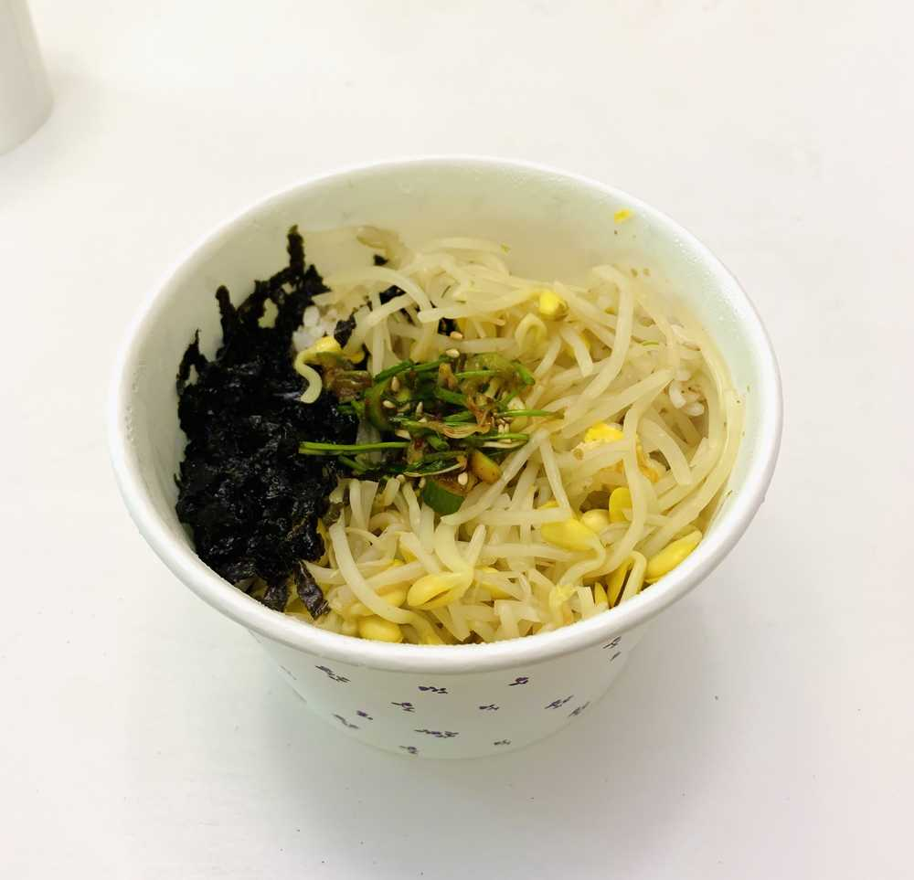
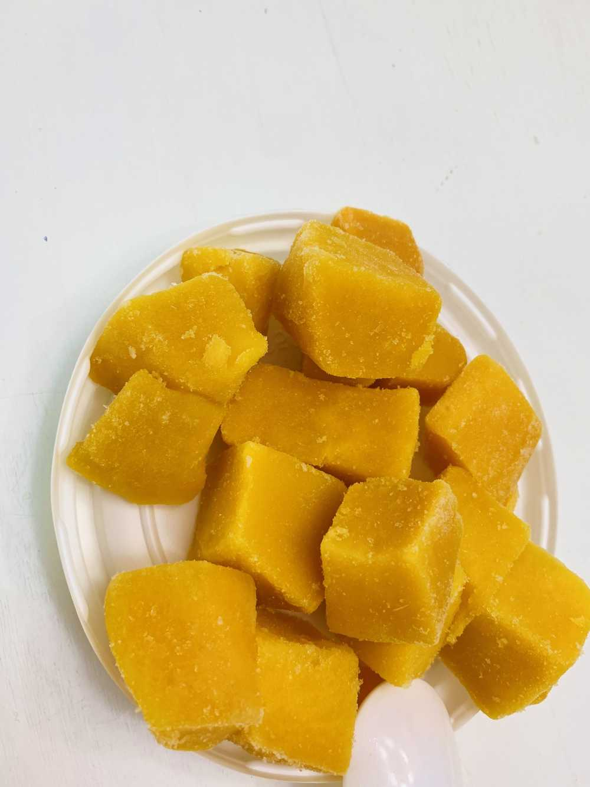

오늘의 메뉴는
🖤💛콩나물 비빔밥💚 + 달래간장🤎

컵떡볶이🧡 * 비닐을 잘못 뜯어서 & 비닐을 잘 못 뜯어서 ..ㅠㅠ 사진 찍기를 포기했G
아이스 망고💛

역시 콩나물 비빔밥에 달래간장 조합은
.....짱이다......
이렇게 늦은 점심 겸 이른 저녁식사를 마쳤는데!!!!!!
사실 비밀이 하나 있오요...
어제 새벽 4시 반에!!! 잠 정리를 마치고...배가 고파서..
이른 아침을 먹었어요
아침에
사진은 못 찍었지만.. 메뉴는
카스테라와 우유.. 완벽한 아침
..
그리구
일어나서
에피타이저로
베이글 + 크림치즈 + 딸기잼 !
히- 한테
베이글을 따땃하게 데워서
한 조각에 크림치즈 내가 바르는 정도로
살짝 바르고 먹여줬는데!
맛있다구 하더라구요 ☺️
그리구 한 조각 더 먹어두 돼요?
하고
집어서 크림치즈를....푹 펐다....ㅋㅋㅋㅋㅋㅋㅋㅋㅋ미안해 히..ㅋㅋㅋㅋㅋㅋㅋㅋㅋㅋㅋㅋ크림치즈가 너한테 적었던 것 같아ㅋㅋㅋㅋㅋㅋㅋㅋㅋㅋㅋㅋㅋ